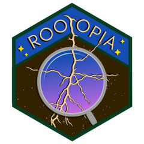

Zhang-Suen thinning using lookup table (LUT implementation)
Source:R/Thinning5.R
lut_thin_fast.RdPerforms iterative skeletonization of a binary raster using a lookup-table encoding of 3x3 neighborhood configurations.
Details
The algorithm operates as follows:
Raster values are extracted once into an integer vector and placed in a zero-padded copy of the grid, stored row by row like terra's cell order. In that layout each of the eight neighbors of a cell sits at a fixed index offset, and the padding keeps a left or right neighbor from wrapping into the adjacent row.
Only root pixels (value 1) can be deleted: every other cell has neighborhood code 0, which the table keeps. The positions of the current root pixels are therefore kept in a list, and the neighborhood code is computed for those positions only.
The code is used as an index into a 256-entry lookup table:
LUT value 1 or 3 -> pixel removed in first sub-step
LUT value 2 or 3 -> pixel removed in second sub-step Removed pixels are set to 0 and dropped from the list. Thinning never adds a root pixel, so the list stays equal to the set of root pixels.
Iteration stops when no pixels are removed or max_iter is reached.
Masked cells (NA) are neither root nor background. They are never
deleted and are NA in the result; as a neighbor they read as
background, the same way the zero padding beyond the image border does. A
root cut by a mask is therefore thinned up to the mask edge and ends there,
as it does at the image border.
The work per sub-step scales with the number of root pixels, not with the number of cells in the image.